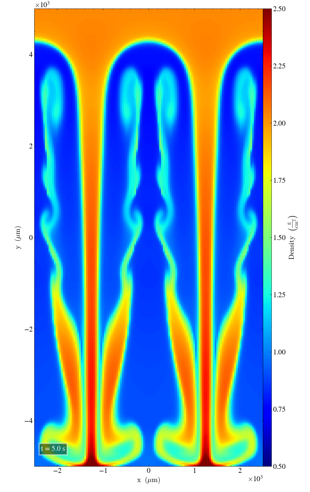
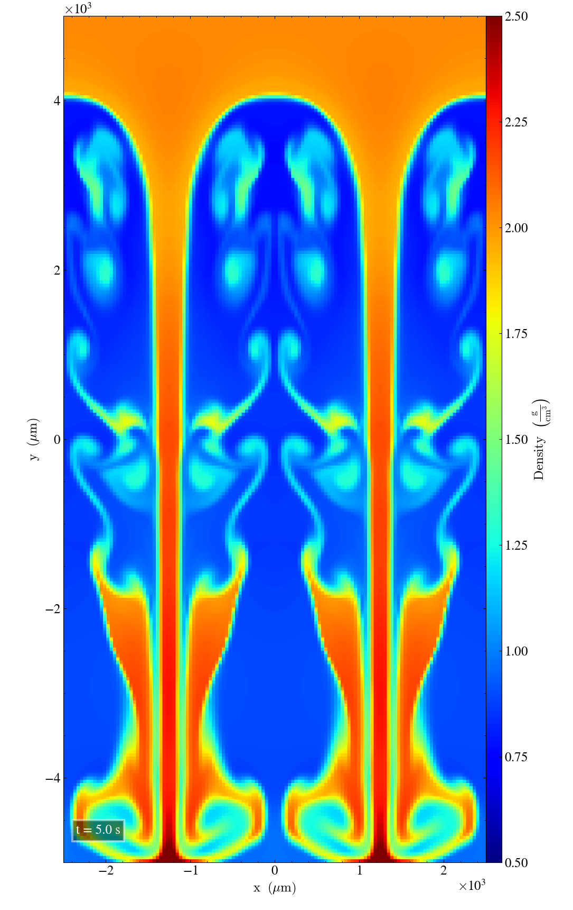
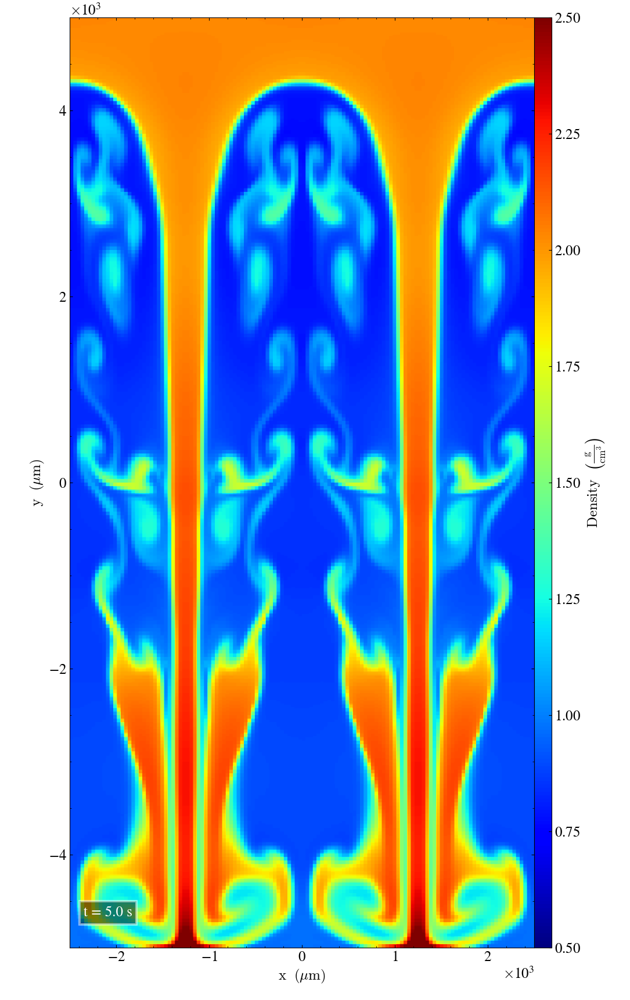
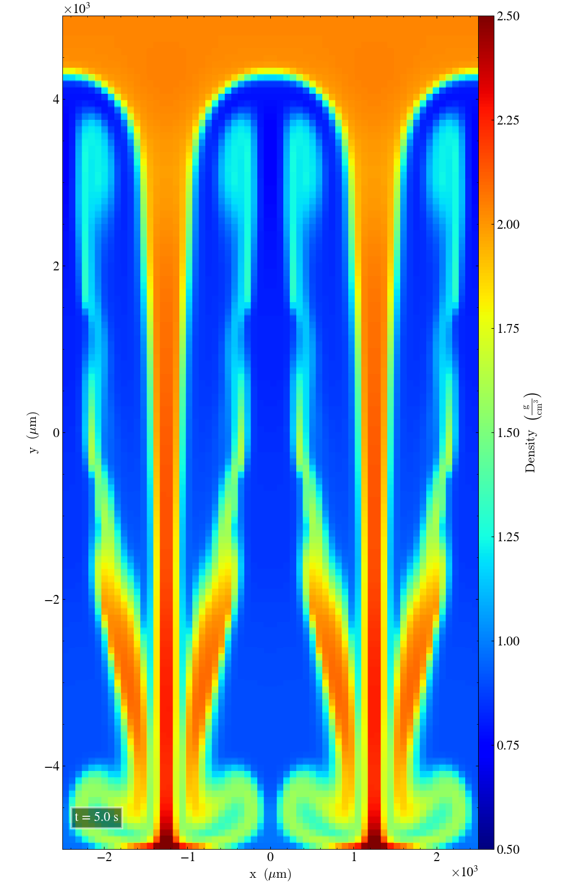
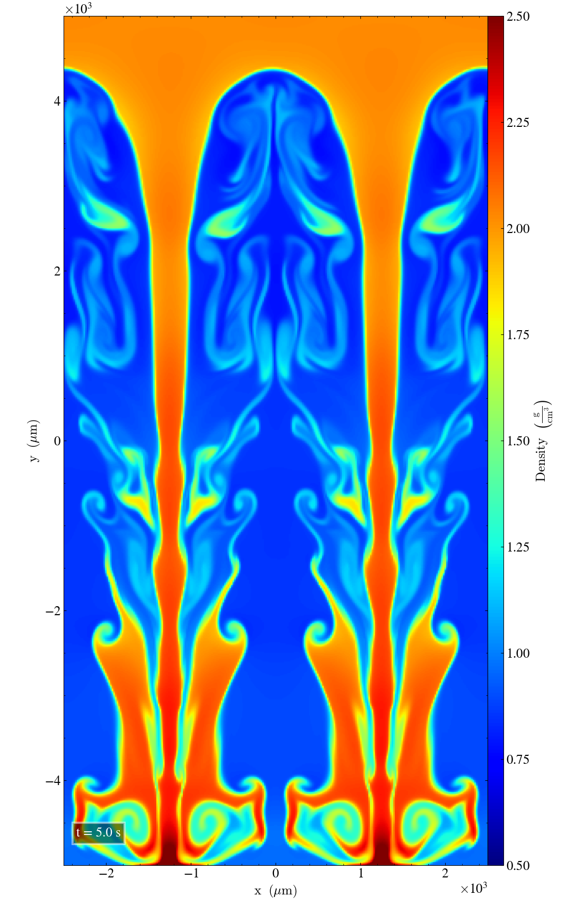
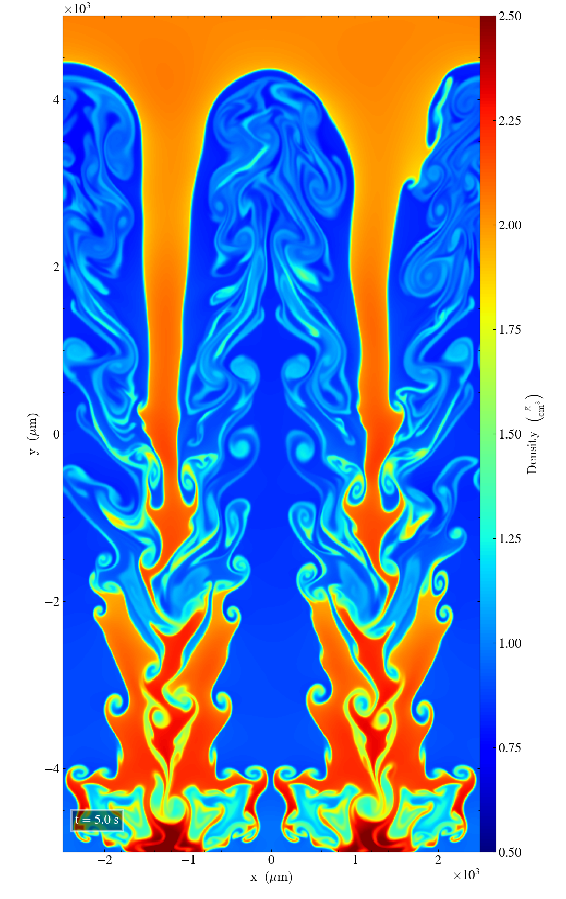

Rayleigh Taylor instability¶
Results from RT experiments run with different parameters¶
In these experiments, we change various parameters and study the effects in resultant density. The Ramses solver (ramses/mhd_eos) is used to simulate the experiment, and simulation snapshot are taken after 5 seconds. At this time we can compare results from different runs.
Initially, experimental parameters follow Abel. T (2011)
Experiment Parameters |
|
|---|---|
Quantity |
Value |
y0 |
0.5 |
d1 |
1 |
d2 |
2 |
deltay |
0.025 |
deltavy |
0.025 |
dymin |
0.3 |
dymax |
0.7 |
with gas constant gamma = 1.4
Varying Ramses slope type¶
slope_type is a parameter for the ramses solver. We tried the different values 1, 2, and 3.5
The following simulations are run on grids with resolution 128x256 in x, y.

|

|

|
Some details in the results are clearly dependent on the slope_type variable. Larger values of this parameter gives the results finer/smaller scale patterns.
Effects of grid —
Falling back to the default slope_type=3.5, we study how grid resolution affects results.

nx=64, ny=256¶ |
nx=128, ny=256¶ |

nx=256, ny=512¶ |

nx=512, ny=1024¶ |